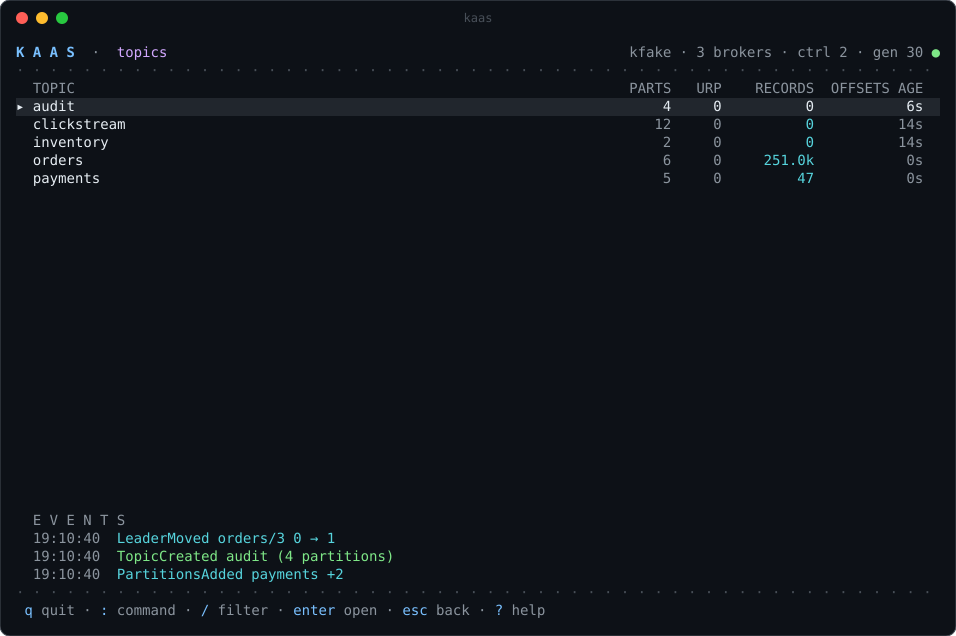
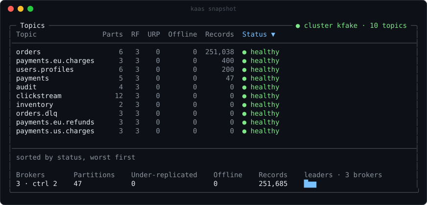
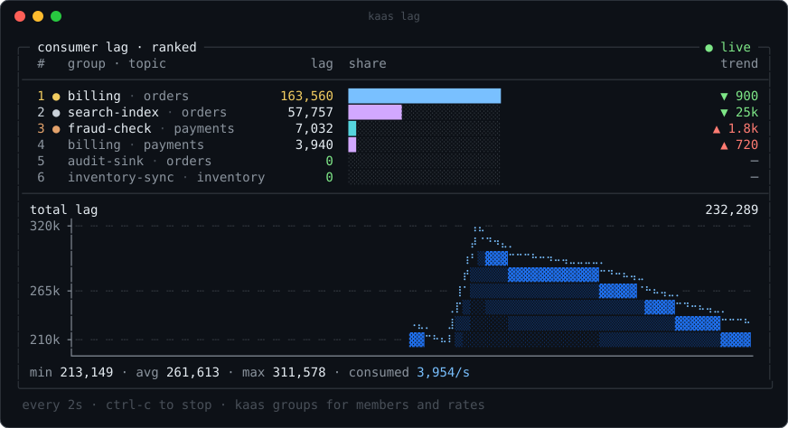
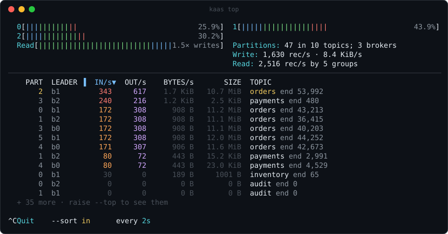
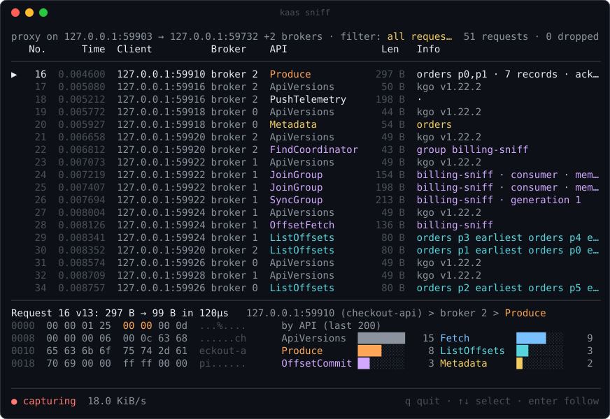
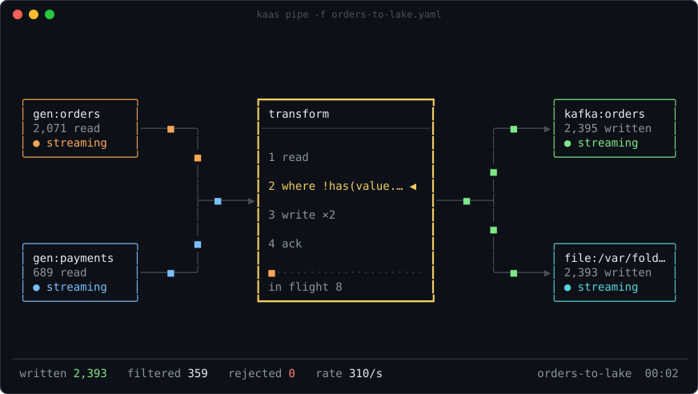

Cloud-hosted Kafka
- Data
- Your records leave your boundary and live in a vendor's cloud.
- Bill
- Usage-based. It moves with your traffic, so growth costs extra.
- Review
- Someone else's environment becomes part of your security review.
Kafka as a Service you run yourself: what a managed service does, delivered as software on your Kubernetes, your network and your disks.
kaas console --demohistory
offset 01
offset 02
Nothing about running KaaS requires us, an account with us, or a path from your cluster to anywhere we control. It runs where your data already is.
Your infrastructure
Kubernetes
Nothing crosses the line.
One short resource names the Kafka version, disk per broker, and a broker count or an autoscaling policy.
KafkaService is all a cluster needs.Three commands, from a clone of the repository, on a cluster with Strimzi installed.
kubectl apply -f deploy/operator/crd.yaml -f deploy/operator/rbac.yaml -f deploy/operator/operator.yamlkubectl apply -f deploy/operator/example.yamlkaas console --kube --namespace kafka --allow-apply# Three brokers at least, nine at most.
apiVersion: kaas.io/v1alpha1
kind: KafkaService
metadata: { name: orders, namespace: kafka }
spec:
version: 4.2.0
brokers: 3
storage: 20Gi
autoscale: { min: 3, max: 9, target: 20000, scaleDownAfter: 10m }offset 03
Incidents
A probe says which layer broke (DNS, TCP, the Kafka protocol or metadata) and what to try. On-call starts at the failing layer.
kaas snapshot · connecting
OK Reached target cluster · 3 brokers · 4 topics · 1.6ms
Change safety
Plans are checked by the controller, rated safe, caution or destructive, and identified by a hash. Apply takes that hash, so what was approved is what happens.
7 changes to match prod-eu.yaml plan 9eedb2a6791adb3b
$ kaas apply -f gitops/prod-eu.yaml --plan 9eedb2a6791adb3b --yes
Capacity and cost
Brokers are added as soon as load calls for them and removed only after load stays low, with partitions moved first. The console estimates monthly cost.
Load and capacity illustration
Compliance and data control
Data stays inside your environment. Configuration lives in git with review, and the console shows where a running cluster has drifted from what was merged.
Change path
kaas plan -f gitops/prod-eu.yaml --exit-codekaas apply -f gitops/prod-eu.yaml --plan <hash> --yesprod-eu differs from prod-eu.yamlData movement
kaas pipe replaces them: filters and fan-out between Kafka, files, HTTP and plugins, in one line someone can read.
kaas pipe
$ kaas pipe --from 'kafka:orders?group=fraud' --where 'value.amount > 1000' --to https://fraud.example.com/hook --to kafka:audit
offset 04
Every command draws a screen built for its job. On a pipe it prints stable text, and with -o json it prints JSON. Works with any Apache Kafka cluster.






GitOps plans, schemas, ACLs, quotas and drift from git for every cluster you run, served from the same binary.
Use kubectl or the console. The operator measures load against what your brokers can take and restarts them one at a time when asked.
Real screens, showing the made-up clusters of kaas console --demo. Acme Commerce doesn't exist.
core/ Cluster-state engine and Kafka logic, with no UI or transport imports.
offset 05
Apache Kafka 3.9, 4.2 and 4.4, in containers.
task test:integration
task test:chaos
Every parser fuzzed. A multi-hour soak runs weekly.
task test:fuzztask test:soak
End-to-end in CI, not against a mock.
task test:e2e
100,000 partitions diffed in about a millisecond.
Don't trust us. Check.
cosign verify ghcr.io/ishaannene/kaas:0.1.0 \
--certificate-identity-regexp '^https://github\.com/IshaanNene/Kafka-as-a-Service/\.github/workflows/release\.yml@refs/tags/v' \
--certificate-oidc-issuer https://token.actions.githubusercontent.comoffset 06
MIT-licensed and free forever. Support is priced per managed broker, so the bill is predictable and is never based on data volume.
$0
forever
$99
per broker per month
Custom
contact us
× $99=per month, on Business
Yes. All of the software is MIT-licensed, with unlimited clusters, at $0. Paid plans buy support and assurance.
No. Brokers, console and data all run inside your environment, and there's no KaaS-hosted service for them to send it to. Your cluster fetches signed images when you install or update; your data doesn't travel the other way.
The software keeps running. It's MIT. Support ends and nothing else changes.
Kubernetes and Strimzi.
go install github.com/IshaanNene/Kafka-as-a-Service/cmd/kaas@latestkaas console --demoServes five made-up clusters with live traffic at http://127.0.0.1:7070. Signed binaries are on the releases page.